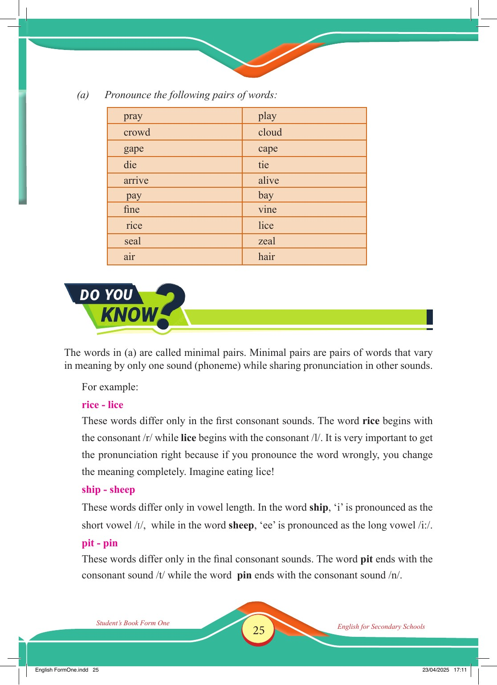

Accessible text transcript - page 25
Use the reader's read-aloud controls or select an individual segment below.
Printed book page 25. (a) Pronounce the following pairs of words: pray play crowd cloud gape cape die tie arrive alive pay bay fine vine rice lice seal zeal air hair Do You Know? banner heading for an information box DO YOU KNOW? The words in (a) are called minimal pairs. Minimal pairs are pairs of words that vary in meaning by only one sound (phoneme) while sharing pronunciation in other sounds. For example: rice - lice These words differ only in the first consonant sounds. The word rice begins with the consonant /r/ while lice begins with the consonant /l/. It is very important to get the pronunciation right because if you pronounce the word wrongly, you change the meaning completely. Imagine eating lice! ship - sheep These words differ only in vowel length. In the word ship, ‘i’ is pronounced as the short vowel /ɪ/, while in the word sheep, ‘ee’ is pronounced as the long vowel /iː/. pit - pin These words differ only in the final consonant sounds. The word pit ends with the consonant sound /t/ while the word pin ends with the consonant sound /n/. Student’s Book Form One English for Secondary Schools English FormOne.indd 25 23/04/2025 17:11 Return to the page image